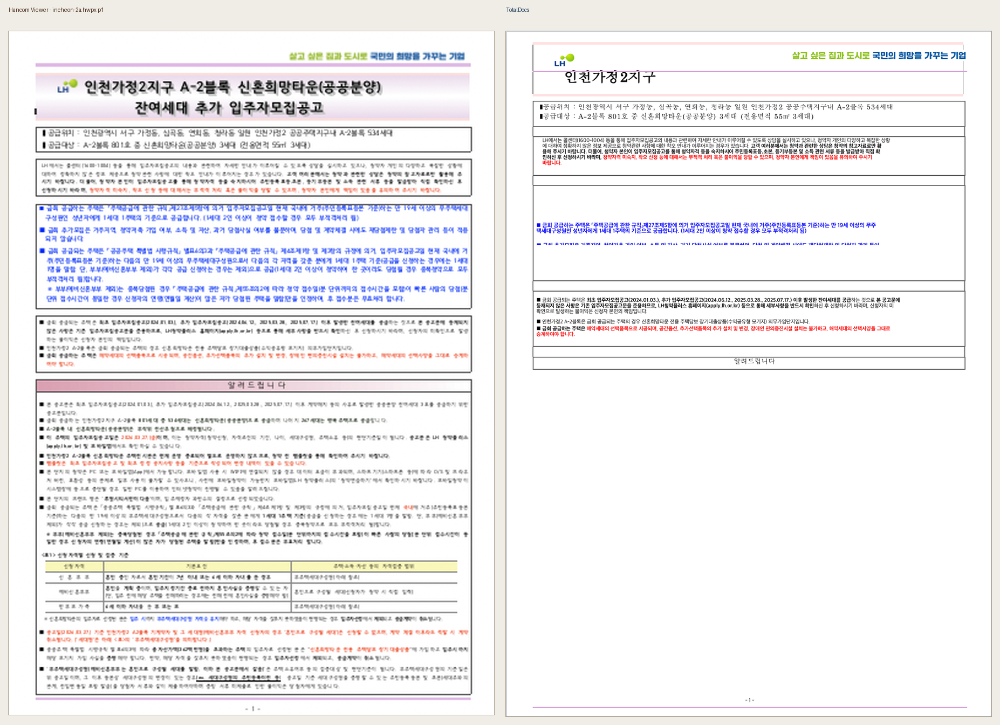
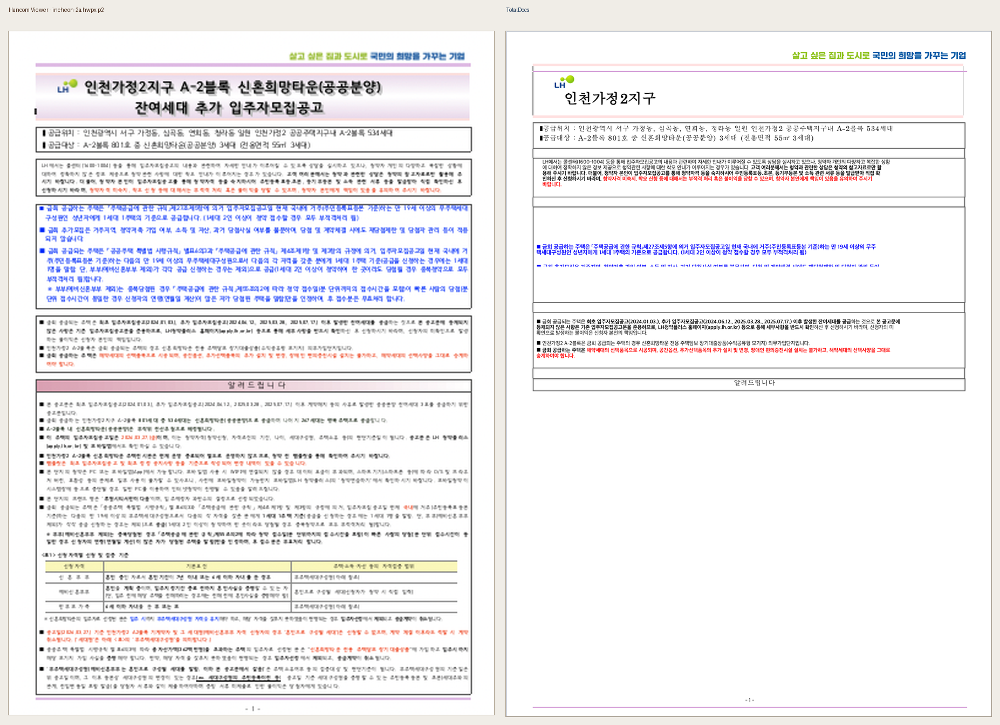
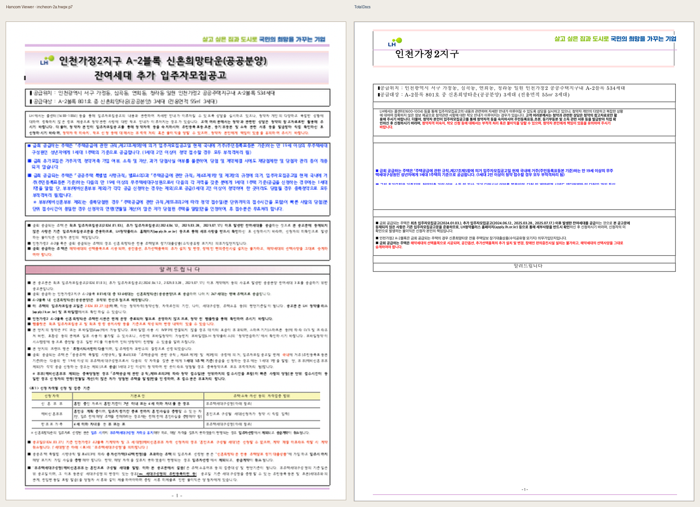
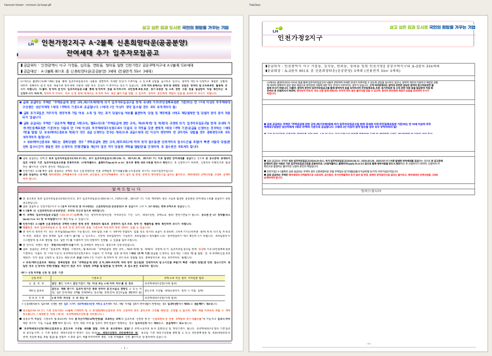
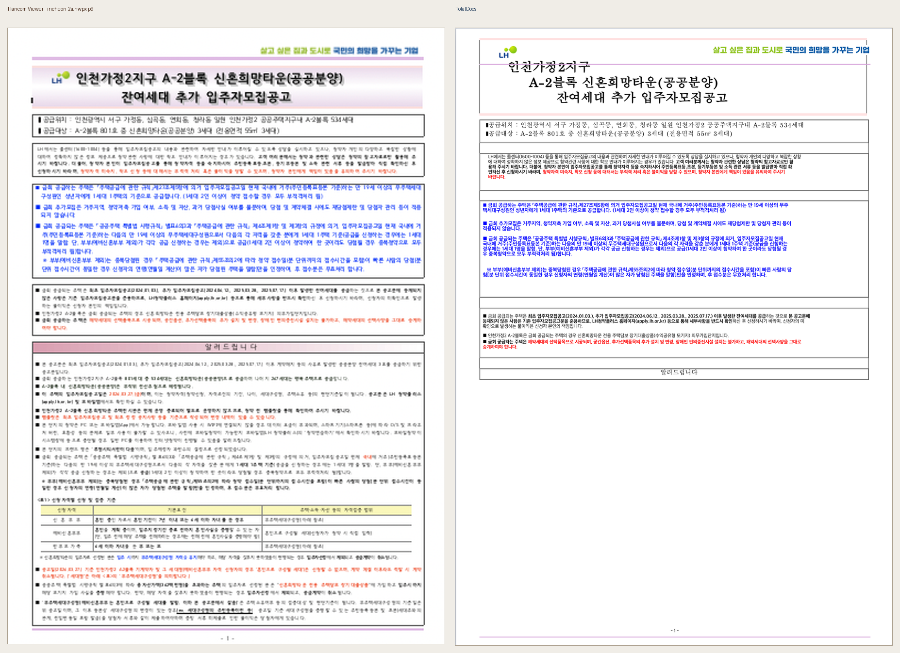
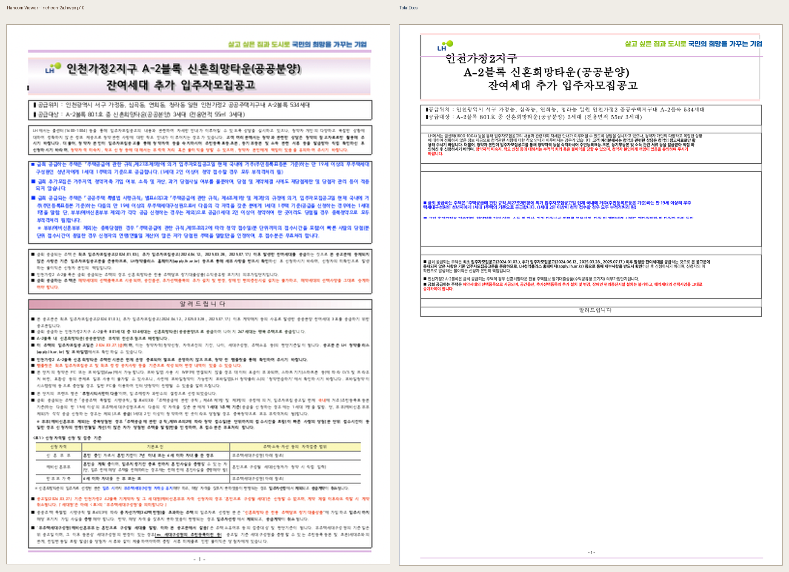
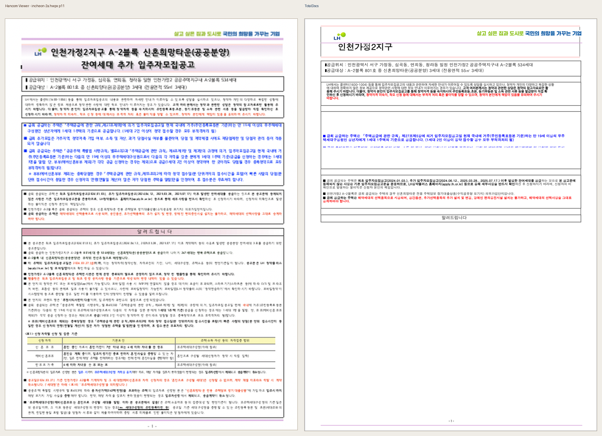

incheon-2a.hwpx
probe
pages 1 · severity {'advisory': 11} · verdicts {'review': 11}
1쪽 · advisory · review · raw 27.911 · blur 25.836 · layout 41.678
advisory: raw pixel diff requires human visual review; this is not a clean pass.

2쪽 · advisory · review · raw 27.831 · blur 25.369 · layout 40.089
advisory: raw pixel diff requires human visual review; this is not a clean pass.

3쪽 · advisory · review · raw 27.576 · blur 24.903 · layout 38.783
advisory: raw pixel diff requires human visual review; this is not a clean pass.
4쪽 · advisory · review · raw 27.364 · blur 25.175 · layout 39.470
advisory: raw pixel diff requires human visual review; this is not a clean pass.
5쪽 · advisory · review · raw 27.576 · blur 24.903 · layout 38.783
advisory: raw pixel diff requires human visual review; this is not a clean pass.
6쪽 · advisory · review · raw 27.364 · blur 25.175 · layout 39.470
advisory: raw pixel diff requires human visual review; this is not a clean pass.
7쪽 · advisory · review · raw 27.787 · blur 25.563 · layout 40.638
advisory: raw pixel diff requires human visual review; this is not a clean pass.

8쪽 · advisory · review · raw 27.564 · blur 25.080 · layout 39.304
advisory: raw pixel diff requires human visual review; this is not a clean pass.

9쪽 · advisory · review · raw 29.323 · blur 26.276 · layout 36.721
advisory: raw pixel diff requires human visual review; this is not a clean pass.

10쪽 · advisory · review · raw 28.026 · blur 25.393 · layout 38.613
advisory: raw pixel diff requires human visual review; this is not a clean pass.

11쪽 · advisory · review · raw 27.832 · blur 25.757 · layout 41.134
advisory: raw pixel diff requires human visual review; this is not a clean pass.
